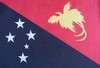
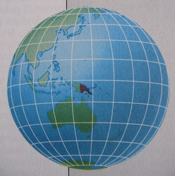

Navigation
 ČESKÁ verze
ČESKÁ verze- The best of New Guinea
- PNG & West Papua
- Today cannibals
- First Contact expedition
- Tribe Expedition
- ITINERARIES AND SCHEDULE
- Carstensz Pyramid - Top of Papua
- Korowai & Kombai tribe – Papua Tree people tribes
- Korowai Batu & Kopkaga - tree people
- Asmat tribe – the Papuan cannibals
- Yali tribe
- Mamberamo river of West Papua
- Dani tribe in Baliem Valley
- Lani tribe in Baliem Valley
- Wamena as a first contact place on West Papua highlands
- Goroka Show & Mt. Hagen Show
- Asaro Mudman
- Huli tribe – the wig-men
- Why to go with us
- The films from our expeditions
- More photos
- References
- Papua Postcards
- Papua Internet
- Links
- Contact us
- Download
Papua New Guinea


Papua New Guinea, PNG in short, is a name of the second – eastern – part of the New Guinea Island. Papua spreads over the whole eastern part of the second biggest island of the world.
Even this region was not left unnoticed by colonizers from different countries. The country fell into Australia’s administration, but it eventually became a legal and independent state. Thanks to that, and its long and rich history under Australia’s reign, the Papua New Guinea of today is more civilized than West Papua (Irian Jaya).
In these days, the country is led by Papuans. They run their own businesses, work in banks, fly planes, and travel all over the world. Some of them have even allegedly studied at Harvard. It is one of the few countries in the world, if not the only one, where the civilized aborigines have become active members of the society. Despite that the country is troubled with alcohol and criminal problems.
The most interesting thing to see in Papua for a tourist are festivals. Papua New Guinea festivals are world famous events. The best festivals take place in Goroka and Mount Hagen.